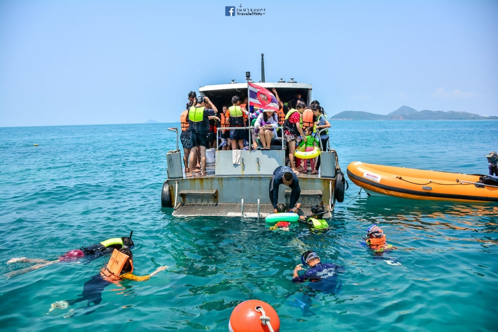
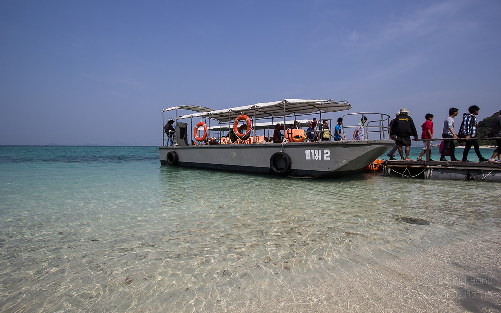

ข้อมูลของเกาะขาม ชลบุรี
- “เกาะขาม” คือเกาะหนึ่งซึ่งตั้งอยู่ในหมู่เกาะแสมสาร อ.สัตหีบ จ.ชลบุรี ภายในเขตอนุรักษ์ใต้การดูแลของกองทัพเรือ เป็นเกาะเดียวในหมู่เกาะแสมสารที่อนุญาตให้ขึ้นเที่ยวได้ มีหาดทรายสีขาวนวลปนกรวดหยาบ น้ำทะเลใสสีฟ้าอ่อน ภายใต้น้ำทะเลใสนี้ทางทหารเรือได้วางแนวเลี้ยงปะการังไว้ ใกล้ๆกับแนวปะการังมีดอกไม้ทะเลจำนวนมากเรียงตัวเป็นระยะทางยาวประมาณเกือบ 50 เมตรซึ่งใครที่ชอบดูปะการังน้ำตื้นนั้นคงเกิดความประทับใจได้อย่างไม่ยากเย็น หากใครว่ายน้ำไม่แข็งทางกองทัพเรือก็ยังได้จัดเรือท้องกระจกไว้คอยบริการชมปะการังจากบนเรือให้เป็นรอบๆอีกด้วย ความงดงามของหาดทราย ,สายลม ,แสงแดด ,น้ำทะเลและโลกภายใต้ผืนน้ำของเกาะขามนั้นมีมากพอจนได้รับการขนานนามว่า “อุทยานใต้ทะเล” เลยทีเดียว
การเดินทางมาเกาะขาม
- การเดินทาง : ใช้ทางหลวงแผ่นดินหมายเลข 3 ถนนสุขุมวิท มุ่งหน้าจากตัว อ.เมืองชลบุรี สู่ อ.สัตหีบแล้วขับเลยต่อไปทาง อ.บ้านฉาง จ.ระยอง(ใช้ทางหลวงแผ่นดินหมายเลข 3 เหมือนเดิม) จะพบแยกตัดกับทางหลวงแผ่นดินหมายเลข 3126 ให้เลี้ยวขวาไปตามทางหลวงแผ่นดินเส้นนี้ ขับรถต่อไปเรื่อยๆสังเกตป้ายบอกทางไปช่องแสมสารให้ดี (ทางไปช่องแสมสารจะอยู่ด้านซ้ายมือของทางหลวงหมายเลข 3126 ที่เราขับรถเลี้ยวเข้ามา) เมื่อพบแล้วให้เลี้ยวซ้ายไปทางช่องแสมสารตามป้าย (หากขับผ่านหลัก กม.6 ไปแล้วแสดงว่าเลยแยกทางไปช่องแสมสารแล้ว) ขับตรงไปเรื่อยๆผ่านเพิงขายอาหารทะเลและย่านร้านอาหารทะเลของชาวบ้านท้องถิ่นสังเกตป้ายทางไปอุทยานใต้ทะเลเกาะขาม ให้เลี้ยวรถไปตามป้าย (ทางไม่ซับซ้อนเพียงแต่ต้องสังเกตป้ายให้ดี)จนกว่าจะพบด่านตรวจของทหาร (หากไม่พบให้ถามทางกับชาวบ้านละแวกนั้นก็ได้)แจ้งกับเจ้าหน้าที่ว่าจะขึ้นเรือไปเที่ยวเกาะขาม เจ้าหน้าที่จะชี้จุดจอดรถยนต์ส่วนตัวให้ นำรถไปจอด ซื้อบัตรค่าธรรมเนียมท่องเที่ยวเกาะขามแล้วนั่งรอรถของกองทัพเรือมารับไปยังท่าเรือ ใช้เวลาในการเดินทางโดยเรือจากฝั่งช่องแสมสารไปยังเกาะขามประมาณ 30 – 40 นาที
ค่าเรือโดยสารเกาะขาม ชลบุรี
| ค่าเรือโดยสาร |
ราคา |
| ชาวต่างชาติ |
300 |
| คนไทย |
200 |
เวลาการเดินเรือโดยสาร
- เรือออกจากฝั่งเที่ยวแรกเวลาประมาณ 09.00 น.
- เรือรับกลับจากเกาะขามเที่ยวแรก เวลาประมาณ 13.00 น.
ติดต่อ-สอบถาม
• กองกิจการพลเรือน กองเรือป้องกันฝั่ง โทรศัพท์ 0 9936 9409 หรือ 0 3842 2170
กิจกรรมการท่องเที่ยวประกอบด้วย...
• การชมปะการังด้วยการดำน้ำแบบผิวน้ำ
• การชมปะการังด้วยเรือท้องกระจก
• การเดินชมพืชพรรณไม้ และทัศนียภาพบนเกาะ
• การพักผ่อนหรือตกปลาบนเกาะ


Back to top
Review เกาะขาม